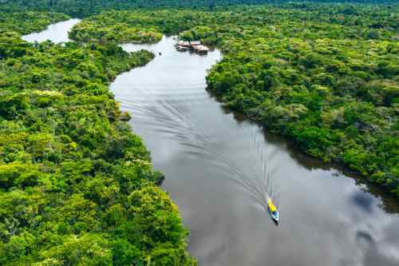

Rafting Adventures Peru

At Rafting Adventures Peru, our mission is to inspire travelers from
every corner of the world to discover Peru through unforgettable
rafting adventures. We believe every river tells a story, every
journey creates lasting memories, and every expedition brings people
closer to nature, culture, and one another. Our commitment is to
provide safe, exciting, and authentic experiences while showcasing
the incredible beauty of Peru.
History
Rafting Adventures Peru was founded by outdoor enthusiasts who dreamed
of sharing Peru's spectacular rivers with adventurers from around the
globe. What began as a small local rafting company has grown into a
team dedicated to creating memorable experiences while promoting
responsible tourism and respect for Peru's natural environment.

Over the years, our experienced guides have welcomed thousands of travelers seeking
unforgettable white-water experiences. Our passion is creating exciting adventures
while
respecting Peru's rivers, wildlife, and local communities.